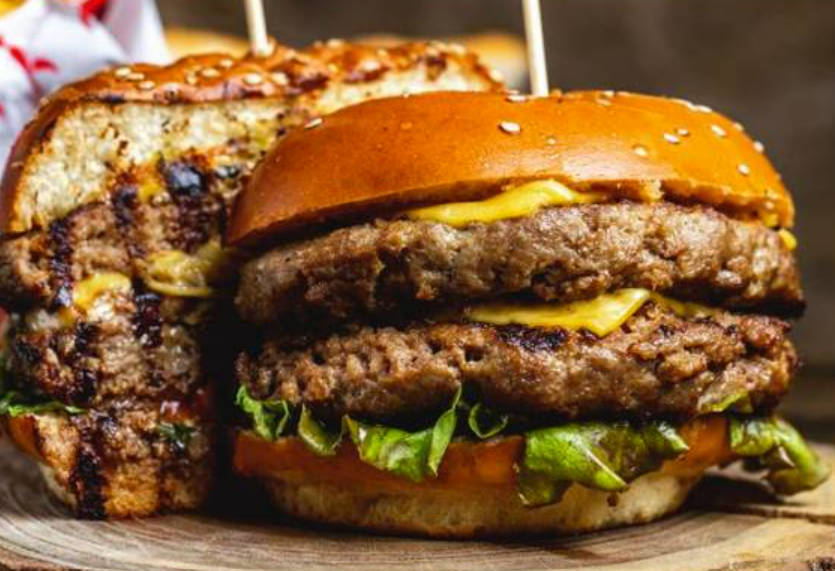

Em uma bela tarde em Porto Alegre, três amigos entusiastas da gastronomia, Bruno, Maurício e Maurício Junker, transformaram sua paixão por hambúrgueres em um negócio inovador. Nasça assim o Burgão, uma hamburgueria única que combina criatividade e sabor.
Após encontrar o local ideal no coração da cidade, os amigos se dedicaram a criar um ambiente acolhedor, misturando o retrô com um toque moderno. O cardápio foi cuidadosamente elaborado, com hambúrgueres exclusivos que conquistaram os paladares locais.
O Burgão rapidamente se tornou um ponto de encontro querido em Porto Alegre. As pessoas não apenas apreciavam a comida deliciosa, mas também a atmosfera amistosa.
O destaque do cardápio, batizado em homenagem à casa, é o "Burgão Supremo" – um hambúrguer suculento, com carne premium, queijo derretido, bacon crocante e um toque especial de molho secreto. O sabor único desse hambúrguer conquistou rapidamente os clientes, tornando-se a estrela do Burgão e consolidando sua audiência como o lugar onde a paixão pela comida é elevada a um novo patamar.